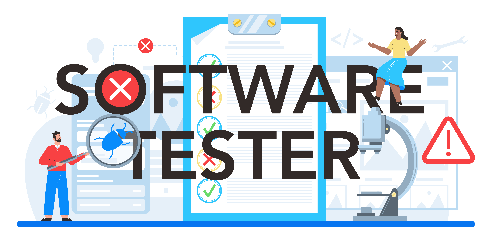

Playwright to fraamework do tworzenia testów automatycznych. Można napisać dowolny test, który standardowo byłby wykonany ręcznie. Następnie zamiast standardowego klikania ręcznego napisany wcześniej skrypt robi te same rzeczy za nas w dosłownie kilka sekund. Testy można łączyć w zestawy testów i uruchamiać automatycznie całą gamę ruchów uzytkownika - od logowania do dowolnych ruchów w aplikacji. Playwright udostępnia wbudowane narzędzia, jednym z nich są raporty, które można wywołać po każdym teście. Tam sprawdza się ile czasu trwał każdy wykonany krok, gdzie powstał problem lub gdzie aplikacja ładowała się za długo. Raport dokładnie pokazuje jakie elementy były użyte do danej akcji oraz które elementy skryptu za nie odpowiadają. Oprócz raportów można korzystać z nagrywarki testów, która bardzo pomaga w ich tworzeniu. Na podstawie klikania w elementy aplikacji, Playwright zapisuje je w formie kodu, który potem można wykorzystać i wielokrotnie uruchamiać.

Marcin Paliński
Od kilku lat jestem testerem oprogramowania i bardzo szybko się rozwijam w tym zakresie. Chętnie analizuję aplikacje internetowe, sprawdzam ich jakość, problemy funkcjonalne oraz zgłaszam własne uwagi ux czy ui.
Przywiązuję dużą uwagę do szczegółów i lubię dyskutować o różnych rozwiązaniach.
Najwięcej satysfakcji w pracy sprawia mi pisanie testów automatycznych, ich rozbudowywanie oraz pokrywanie kolejnych funkcjonalności.
Czym głównie się zajmuję?
- select_check_boxTesty manualne
- select_check_boxTesty automatyczne backendu w Postmanie
- select_check_boxTesty automatyczne frontendu w Playwright

Język JavaScript jest niezbędny do pisania testów API w aplikacji Postman. Do każdego request'u można napisać testy, dzięki którym porównuje się dane zwracane przez backend. Zwraca on informację o wcześniej utworzonych zasobach oraz pozwala wykonywać na nich kolejne operacje.
Dodatkowo język JavaScript można wykorzystać do napisania testów automatycznych. Zamiast klikać po kolei różne pola na stronie internetowej, może zrobić to za nas wcześniej napisany skrypt automatyczny. Testy automatyczne oprócz bardzo szybkiego wykonywania się mogą również być uruchamiane na kilku różnych przeglądarkach jednocześnie, co również rzutuje na czas i efektywność pracy.
Aplikacja Postman to narzędzie umożliwiające testowanie, zarządzanie i automatyzację testów API. To właśnie dzięki różnym metodom http można sprawdzić jak zachowa się nasza aplikacja podczas pobierania danych z serwera, wysyłania ich, aktualizowania, usuwania oraz czy dane zwracane przez serwer są poprawne. Przewiduje się w ten sposób najczęstsze zachowania użytkowników i wykonuje liczne testy przekazywanych danych, aby mieć pewność, że wszystko działa poprawnie.
Dzięki Postman'owi można układać testy w kolekcjach i uruchamiać je w dowolnej kolejności. Dodatkowo testy trwają dużo krócej, niż w przypadku wykonywania ich za każdym razem ręcznie. Zamiast kilku minut poświęca się na to dosłownie 10 sekund.
Bazy danych to kolejne narzędzie urozmaicające pracę testera. Wszystkie request'y tworzące, modyfikujące lub usuwające zasoby mają odzwierciedlenie właśnie w bazie danych. Baza danych przekazuje informacje w niej zawarte do response'a, który wywołany jest wczesniejszym reuest'em (np. z poziomu API).
Najczęściej w tym celu używa się języka SQL, ponieważ jest standardowym językiem dla większości systemów bazodanowych. Język SQL jest prostym językiem, którego podstaw można szybko się nauczyć. Dodatkowo dzięki swojej popularności posiada szeroką społeczność programistów czy specjalistów, którzy mogą udzielić wsparcia.
Na koniec należy nauczyć się korzystać z systemu kontroli wersji. Dzięki niemu można wrócić do dosłownie każdej wersji każdego pliku, nad którym wcześniej się pracowało. Najpopularniejszym tego typu narzędziem jest Git, który samodzielnie śledzi każdy dodany do niego plik. Podczas projektu różne osoby pracują nad różnymi plikami, a na koniec Git je za sobą integruje. Z kolei branch'e pozwalają mieć kilka wersji danego projektu - np. jedną produkcyjną, drugą roboczą. Jeśli w wersji roboczej wszystko działa poprawne, wtedy można ją połączyć z wersją produkcyjną. Na wypadek gdyby cokolwiek poszło nie tak, Git pozwala wrócić do dowolnego miejsca w projekcie i jeszcze raz przeanalizować potencjalne poprawki. Można pracować na wersji roboczej, a aplikacja jest pokazywana w wersji produkcyjnej.
Do tego wszystkiego potrzebne będą narzędzia do zarządzania testami. Przez bardzo długi czas używano Jiry od Atlassian, jednak coraz więcej organizacji korzysta z rozwiązań Microsoftu. Aktualnie to w Azure DevOps rozpisuje się przypadki testowe, zgłasza bugi i taski, przegląda gotowe zadania oraz co najważniejsze wykonuj testy manualne. Podczas wykonywania testów od razu można oznaczać statusy na każdym kroku, a ustawienia pozwalają na konfigurację, aby w przypadku napotkania błędu, od razu był zakładany bug. Projekt można podzielić na zespoły czy wspomogać się pull-requestami innych osób. Do tego dochodzą możliwości certyfikacji od Microsoft - od architektury po różne specjalizacje.